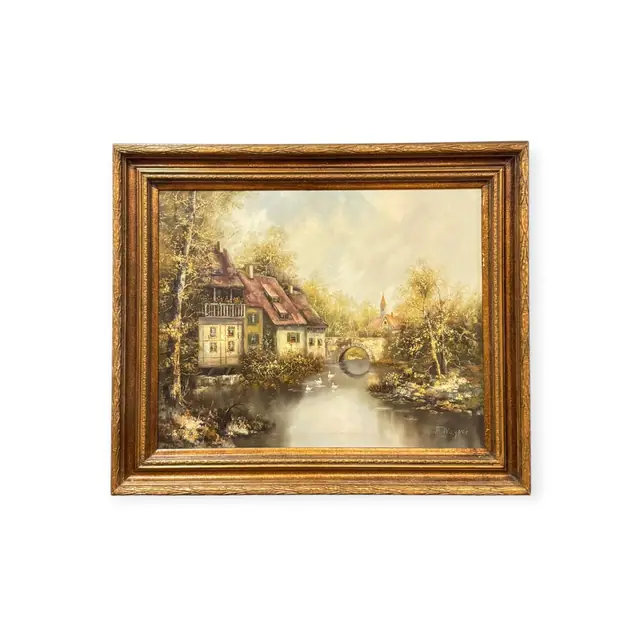
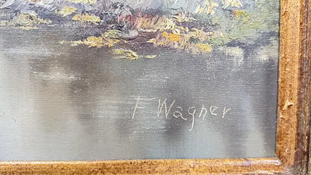
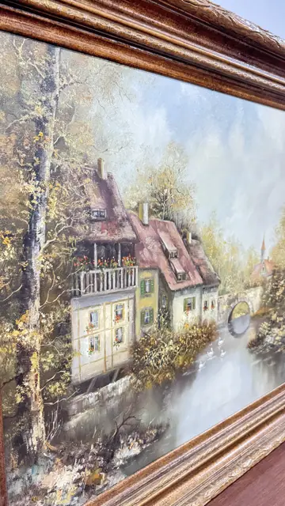
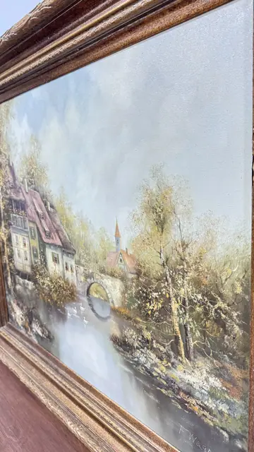

Paintings & Prints
European Village by a Millstream, F. Wagner, Signed, Framed
F. Wagner · mid to late 20th century
Price Upon Request




About the Item
F. Wagner. A quiet landscape of cream stuccoed cottages with steep red-brown tiled roofs and balconies clustered at the water's edge, reached by a low stone arch that is doubled by its reflection. Slender autumn trees flecked with gold and white impasto lean over the buildings and a church spire rises in the misty distance. The water is painted smooth and silvery, in deliberate contrast to the thickly loaded, granular handling of the foliage and roofs. The palette is soft: greys, creams, ochres and olive, warmed by touches of rust. Medium: oil on canvas. Signed lower right, in pale grey-white paint, reading "F. Wagner". Inscribed on the reverse or mount: F. Wagner. Condition: Paint film looks sound with no craquelure visible at this resolution; the frame has scattered chips and abrasion along the outer edges, most noticeably at the corners.
Details
- Creator:
- F. Wagner
- Creation Year:
- mid to late 20th century
- Dimensions:
- Height: 32.5 in (82.55 cm)
Width: 37.75 in (95.89 cm)
outside of frame - Medium:
- oil on canvas
- Period:
- 20Th
- Condition:
- Offered in the condition shown in the photographs.
- Reference Number:
- VO-70
- Documentation:
- no certificate photographed
- Gallery Location:
- F. Wagner